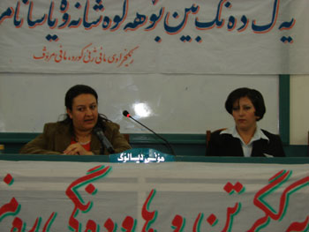
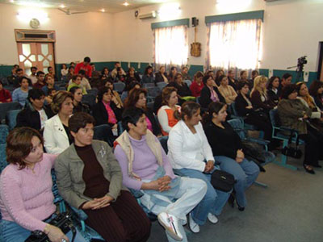

|
|

سمیناری در کردستان عراق برای حمایت از کمپین یک میلیون امضاء زنان ایران
شنبه4 فروردین 1386
روز دوشنبه 5 مارس با شرکت فعالان و سازمانها و انجمنهای زنان در شهر سلیمانیه سمیناری به مناسبت هشتم مارس روز جهانی زن برگزار گردید که هدف از این سمینار پشتیبانی و حمایت سازمانها و انجمنهای زنان کردستان عراق از کمپین یک میلیون امضاء زنان ایران بود. این سمینار که از سوی سازمان حقوق زن کرد، حقوق بشر برگزار گردید به بررسی و تحلیل قوانین ضد زن پرداخت و از همه شرکت کنندگان خواسته شد که حمایت خود را از زنان ایران و کمپین برای تغییر قوانین اعلام کنند.

در این سمینار خانم فریبا محمدی فعال حقوق زنان توضیحاتی در رابطه با کمپین زنان ایران جهت تغییر قوانین مربوط به زنان داد و به بررسی هدف زنان ایران در ارتباط با این کمپین پرداخت و در واقع از زنان کردستان عراق خواست تا هم صدا با زنان ایران برای تغییر قوانین زن ستیز قدم بردارند و آنها در این راه پر تلاطم تنها نگذارند. هم چنین به وضعیت اسفبار زنان در ایران و دستگیریهای اخیر اشاره کرد که چگونه حقوق حقه آنها پایمال می گردد. لازم به ذکر است که در پایان این سمینار بیانیه ای جهت حمایت از کمپین زنان ایران تدوین گردید که قرار است از سوی همه آزادیخواهان و فعالان جنبش زنان امضا شود.
